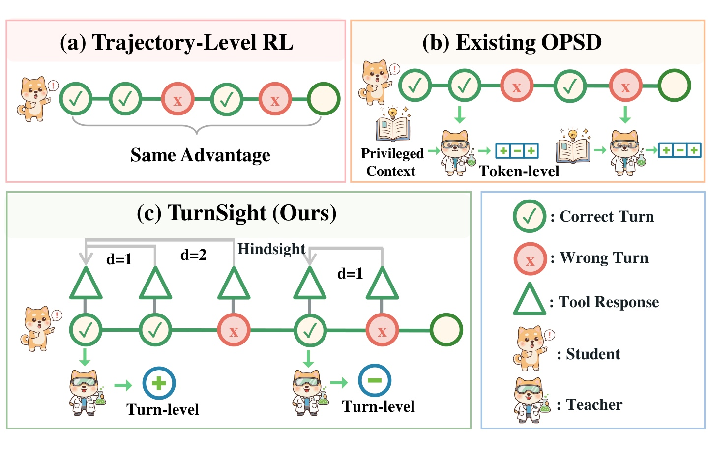
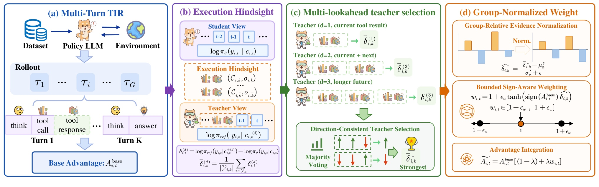
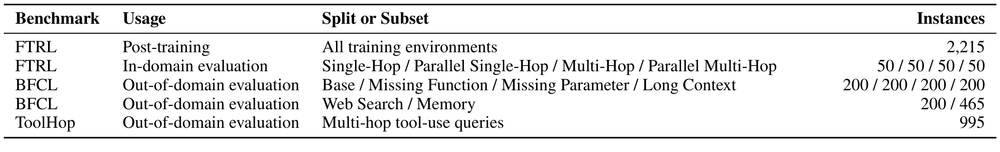
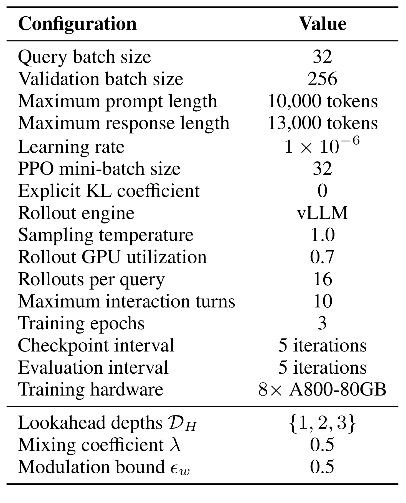
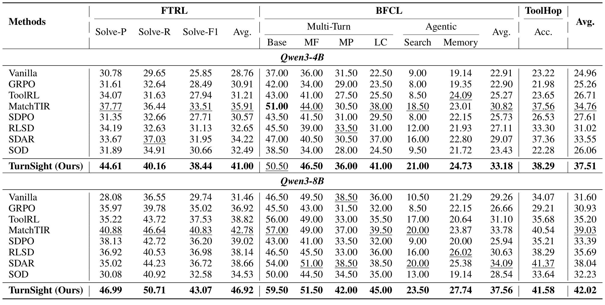
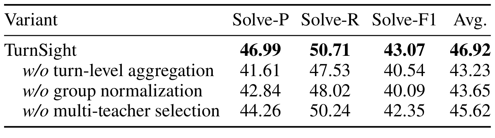
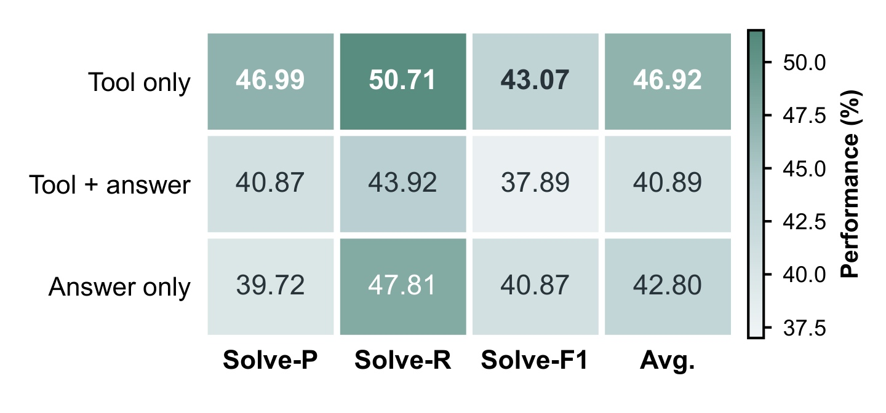
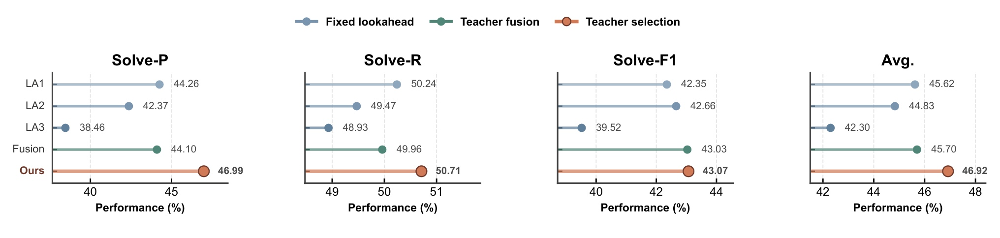
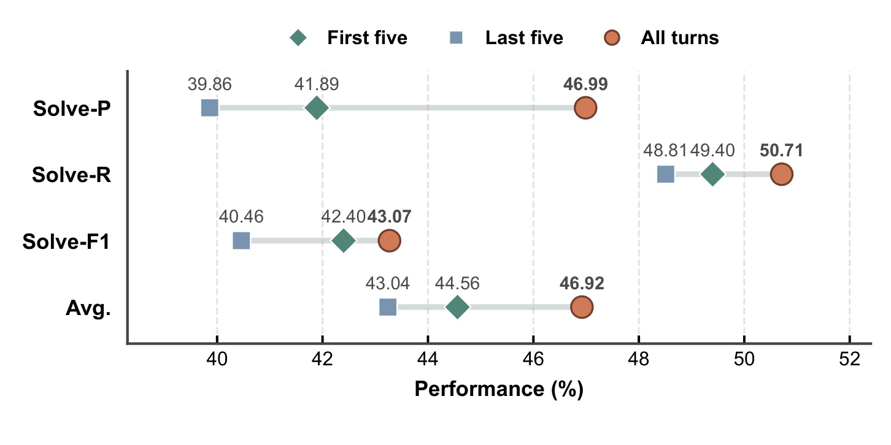
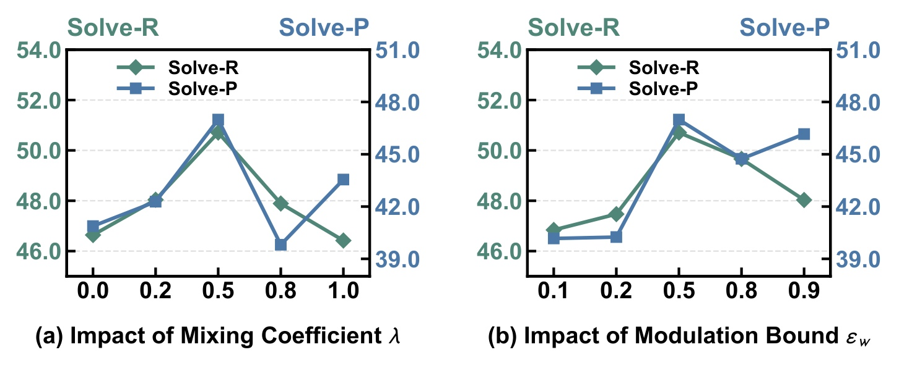

TurnSight：面向工具集成推理的逐轮后见自蒸馏
《TurnSight: Turn-Level Hindsight Self-Distillation for Tool-Integrated Reasoning》研究如何给多轮工具调用中的每一轮分配更准确的训练信用。第一作者 Changle Qu 的主机构是中国人民大学高瓴人工智能学院，百度参与合作；论文于 2026 年 8 月 4 日公开为 arXiv v1。本文的唯一论文入口是 arXiv:2608.04007，论文首页给出的官方代码仓库已核验可访问。TurnSight 不额外训练一个模仿目标，而是让冻结参考模型在训练时看到同一条在策略轨迹之后实际发生的工具执行结果，用这些“后见”证据调节原强化学习优势的幅度。
多轮工具推理只用最终成败给整条轨迹分配同一信用，无法区分真正推进任务、无效乃至有害的中间工具交互；而依赖标准答案或参考轨迹的特权教师又可能与智能体实际访问的状态错位，token 级信号还会在同一轮内部相互冲突。
1. 背景和问题
工具集成推理不是一次性生成答案。模型在第 (k) 轮先进行自然语言推理，选择一个或多个工具、构造参数，环境返回执行结果，模型再据此决定下一轮动作。一次工具调用会改变外部状态：如果模型选错函数、漏掉参数或误读返回值，后续轨迹就可能进入与标准解完全不同的状态。因此，最终答案正确只能说明整条轨迹最终成功，却没有告诉训练器中间哪一轮是关键转折、哪一轮只是冗余尝试、哪一轮虽然表面格式正确却把环境带错。RLVR 或 GRPO 常把同一个组相对轨迹优势传播给该轨迹的所有策略 token；长轨迹中的不同决策因果作用悬殊，却获得相同方向和近似强度的更新，这是第一层粒度错位。
一种直观补救是引入更密的工具级监督，例如把生成调用与标注工具轨迹逐轮匹配。但这要求参考动作在当前状态仍然成立。一旦在策略先前做出不同调用，环境状态和可用信息便改变，原参考轨迹的下一步不一定仍是合理答案。另一条路线是 on-policy self-distillation：教师与学生评估同一条在策略轨迹，但教师额外看到标准答案、成功 rollout 或蒸馏技能。它比离线模仿更贴近学生访问状态，不过特权信息往往描述“整题怎样做”，不一定回答“学生在此刻做的这次工具交互是否合适”。标准答案甚至可能压过当前工具返回中更直接的局部因果证据，形成第二层状态错位。
第三层问题来自决策单位。工具调用的一轮通常同时包含推理、工具名称、JSON 参数和格式 token。若教师—学生置信度差在每个 token 上独立作用，函数名可能得到正信号，某个参数或标点却得到负信号，训练器会在同一个语义动作内部同时加强和削弱更新。TurnSight 的基本判断是：工具推理的自然信用单位不是单个 token，也不是整条轨迹，而是一轮完整交互。 监督需要同时满足两点：证据来自在策略实际执行产生的状态；同一工具轮内部具有一致的信用方向。

Figure 1 把上述三个层级画在一起。左上角的 trajectory-level RL 用一条括号把成功轮与错误轮包住，表示同一优势覆盖整条序列；它保留探索，但无法定位错误。右上角的既有 OPSD 给教师加入全局特权上下文，却在不同 token 位置出现正负冲突，这既暗示状态信息可能不贴合当前调用，也说明 token 粒度不能维护一次工具交互的语义整体。下方面板让教师看到学生真实收到的工具返回，并以 (d=1) 或 (d=2) 的不同未来范围回看当前轮；最终产出的是整轮共享的正或负证据。图中后见分支只用于训练，绿色三角形是环境返回而不是额外人工标注。因而，TurnSight 想解决的不是“如何找到更强教师”，而是如何让教师观察正确的执行后果、在正确的交互粒度上发言，并且不夺走 RL 对最终任务方向的控制权。
这个定位也解释了论文与推荐系统/大模型工程的关系。在工具型 Agent 中，一轮调用类似一次具有状态转移的策略动作；在搜索、推荐或广告链路中，候选检索、特征查询、重排工具也可能形成多阶段调用。若只看最终是否回答正确或会话是否完成，早期错误工具选择与后期修复会被混成一个奖励。TurnSight 提供的是一种训练期信用接口：环境已产生的结果成为后见证据，局部证据决定更新强弱，最终奖励仍决定总体方向。它并不声称解决线上推荐的延迟反馈或反事实偏差，但“状态对齐、动作粒度对齐、全局方向不翻转”这三个原则具有较清楚的迁移意义。
从因果角度看，论文采取的是一种保守近似：它没有证明某个工具返回必然由当前轮单独造成，而是把同一在策略轨迹上的短期未来当作比外部标准答案更贴近访问状态的证据。短 horizon 降低混入其他动作的风险，长 horizon 补充延迟后果，多视图的一致方向再提供可靠性筛选。这个设计仍受可观测性限制：如果环境返回延迟、工具本身带随机噪声，或真正影响要在三轮以后才显现，教师看到的后见块可能不完整。也正因为如此，TurnSight 没有让后见信号直接控制梯度方向，而是保留最终任务优势的正负号；这是论文从“更密监督”走向“受约束的局部信用”时最关键的安全选择。
还要区分“结果可验证”和“中间过程可归因”。FTRL 一类环境能程序化检查任务成败，解决了 reward 是否可得，却没有自然给出每轮标签；TurnSight 正是在不增加人工轨迹标注的前提下，把执行后果转成相对证据。它也不把工具返回本身当作奖励：同一返回要通过冻结教师对既有 token 的置信度变化来解释，再与 sibling rollouts 比较。这样做保留了语言模型对复杂返回的语义判断，但也把教师校准误差带进训练。背景问题因此不是单纯的稀疏奖励，而是如何在无逐轮真值时构造既贴近状态、又不会越权翻转全局目标的信用代理。
2. 方法
2.1 执行条件后见与逐轮聚合
论文先从普通 OPSD 的 sampled-token gap 出发。学生只看 rollout 时已有上下文 (c_t)，训练期教师看额外特权上下文 (c_t^+)，两者都给学生实际采样的 token (y_t) 打分：
符号解释：(pi_\theta) 是学生策略，(pi_T) 是分离梯度的教师，(y_t) 是已经采样的 token，(delta_t) 是看到额外信息后教师对这个 token 的相对置信度变化。正值表示后见信息让既有行为更可信，负值表示后见信息使它显得更可疑。这里不是让学生直接拟合教师分布；gap 只作为随后调节 RL 优势幅度的证据，所以教师不直接决定策略更新方向。
TurnSight 不把标准答案塞进 (c_t^+)，而是从学生自己的第 (i) 条轨迹中取工具执行块。当前轮为 (k)，前视深度为 (d)，后见块定义为：
符号解释：(C_{i,j}) 是第 (j) 轮由学生发出的工具调用集合，(o_{i,j}) 是对应环境返回，(K_i) 是轨迹总轮数，\(\bar{k}\) 防止前视超出轨迹末尾。(d=1) 只看当前调用的结果，(d=2) 再看下一轮结果，(d=3) 包含更长的未来。它们全是已经发生在同一条在策略轨迹上的执行事实，因此不会把学生带回一条未访问的参考路径。
教师上下文是原因果上下文与该后见块的拼接：
符号解释：(oplus) 表示上下文拼接；(c_{i,t}) 仍是学生在 rollout 时真实拥有的信息，(c_{i,t}^{+(d)}) 仅在训练评估分支中出现。冻结初始参考策略 (pi_{\mathrm{ref}}) 在扩展上下文下以 teacher forcing 重新给原 student token 打分：
符号解释：(delta_{i,t}^{(d)}) 是深度 (d) 下的 token 后见差；第一项问“知道这段真实执行后果后，冻结参考模型是否更相信学生当时的 token”，第二项是学生原始置信度。使用冻结参考模型避免教师随策略同步漂移，但也意味着后见判断受初始模型校准质量约束。
随后，论文把同一工具轮的所有策略 token 聚合成一个信号。令 (Y_{i,k}) 为轨迹 (i) 的第 (k) 轮所含策略 token 位置集合：
符号解释：(|Y_{i,k}|) 是本轮 token 数，\(\bar{\delta}_{i,k}^{(d)}\) 是深度 (d) 对整轮的平均后见评估，并会共享给这一轮的全部策略 token。均值让函数名、参数和格式共同表达一次工具决策，避免各 token 独立选择教师后出现轮内相互抵消。这一聚合是 TurnSight 将监督粒度对齐 TIR 交互结构的关键步骤。 环境观察 token 不由策略生成，既不进入策略损失，也不参与有效位置统计。
2.2 多前视方向一致教师选择
单一前视深度并不适合所有调用。参数是否合法通常从当前工具报错就能判断，(d=1) 已足够；某次检索是否真正有用，可能要等下一轮把结果用于计算或回答后才显现，需 (d=2) 或 (d=3)。但更长上下文也会引入与当前调用无关的后续动作，稀释局部因果关系。论文固定构造 (D_H={1,2,3}) 三个教师视图，然后先看方向一致性，而不是直接平均它们。
每个深度的逐轮信号先映射成正负方向：
符号解释：(s_{i,k}^{(d)}) 只保留第 (d) 个教师对当前轮“支持或反对”的方向。对三个方向做多数投票得到 (v_{i,k})；三教师的奇数设置避免平票。随后只在与多数方向一致的教师中，选择绝对幅度最大的证据：
符号解释：(v_{i,k}) 是跨 horizon 的共识方向，(d_{i,k}^{*}) 是共识集合内最强教师，\(\bar{\delta}_{i,k}^{*}\) 是最终保留的逐轮后见信号。先投票可过滤孤立反向教师，再选最强值可避免把清晰证据平均稀释。这一步仍不能证明多数教师必然正确；若三个视图共享同一种冻结模型偏差，多数票只会稳定地保留共同偏差。 方法依赖的是跨时间范围的方向一致性，而不是独立教师的真正统计独立性。
2.3 组归一化、有界调制与策略优化
不同 prompt 的难度、轨迹长度、轮位置和训练阶段都会改变 log-probability gap 的尺度。直接把 \(\bar{\delta}_{i,k}^{*}\) 当权重，可能让“天然 gap 大”的问题压过真正具有相对信息量的轮。TurnSight 仿照 GRPO 的组相对思想，在同一个 query 的 16 条 sibling rollouts 内汇总所有有效轮和策略 token；它不按 turn index 分桶，因为不同轨迹长度不同。组均值与标准差得到标准化证据：
符号解释：(mu_{q_i}^{\delta}) 与 (sigma_{q_i}^{\delta}) 是 prompt (q_i) 下 sibling rollouts 的选定后见 gap 统计量，(epsilon) 防止标准差过小导致数值不稳定，(hat{\delta}_{i,k}) 表示当前轮相对同题其他轮和轨迹的证据强弱。无效位置、mask 位置和环境观察不会参与统计。这样，模型比较的是“同一问题下这轮比其他轮更值得加强还是削弱”，而不是跨问题比较原始 log-probability 尺度。
标准化信号通过 sign-aware 权重进入 RL：
符号解释：(A_{i,t}^{\mathrm{base}}) 是底层 RL 算法给 token 的基础优势，(operatorname{sign}) 只取其方向，(epsilon_w) 控制最大调制幅度，(w_{i,t}) 是乘性权重。若后见证据与基础优势同向，权重大于 1，原更新被加强；二者反向时权重小于 1，原更新被削弱。双曲正切把异常 gap 压到有限范围：
符号解释：当论文设置 (epsilon_w=0.5) 时，权重位于 ([0.5,1.5])。只要 (epsilon_w<1)，权重保持为正，因此后见教师不会把一个正优势翻成负优势，或把负优势翻成正优势。RL 的最终任务奖励继续掌握方向，TurnSight 只决定这一轮沿该方向走多大一步。 这是它区别于增加 imitation loss 或直接跟随教师分布的安全阀。
混合后的优势为：
符号解释：(lambda) 控制局部后见调制与原始全局优势的混合强度；(lambda=0) 退化为底层 RL，(lambda=1) 完全采用有界权重后的幅度，但方向仍由 (A^{\mathrm{base}}) 保持。论文在实验中取 (lambda=0.5)，让两部分等权。最后，只需在 GRPO 的 clipped surrogate objective 中把原优势替换为 (widetilde{A})：
符号解释：(G) 是每个 prompt 的 rollout 数，(|\tau_i|) 是轨迹中的有效优化位置数，\(\rho_{i,t}\) 是新旧策略概率比，(epsilon) 是 PPO/GRPO 裁剪阈值。论文实现不使用显式 KL 惩罚，因此这里突出其实际采用的 surrogate 项。教师 gap、选择结果和调制权重都从计算图分离；训练结束后，执行后见、三个冻结教师、投票和组统计全部移除，推理只运行更新后的 policy。

Figure 2 从左到右验证上述信号流。蓝色模块先让 policy 与环境交互，并由最终任务结果得到 base advantage；紫色模块把学生真实的工具调用与返回放进教师视图，同一原 token 在学生和冻结参考模型下的 log probability 差先按 token 计算、再按 turn 平均。绿色模块为 (d=1,2,3) 构造不同长度的后见窗口，先用多数票定方向，再挑该方向中幅度最强的教师。橙色模块在同 prompt 的 sibling rollouts 内归一化，经过 tanh 得到有界权重，再与 base advantage 混合。图中没有从教师到新 action 的解码箭头，也没有额外 supervised loss；它强调 TurnSight 的作用点是 policy-gradient credit，而不是生成一条替代轨迹。训练与部署的差异也很明确：四块都参与训练数据处理和打分，部署只剩左侧学到的 Policy LLM 与环境交互。
3. 实验结果
3.1 数据、模型与评测协议
论文用 FTRL 做后训练和域内评测。训练部分包含 2,215 个可执行工具任务；域内测试由 Single-Hop、Parallel Single-Hop、Multi-Hop 和 Parallel Multi-Hop 四类各 50 个查询组成，使用 Solve-P、Solve-R 与 Solve-F1 衡量完成子任务的精确率、召回率和调和平均。域外评测包括 BFCL 与 ToolHop：BFCL 的 Base、Missing Function、Missing Parameter、Long Context 各 200 个实例，Web Search 为 200 个，Memory 为 465 个；ToolHop 包含 995 个多跳工具查询。BFCL 评环境状态或指定答案字段，ToolHop 用最终答案 accuracy。三者覆盖已见工具环境、缺函数/缺参数/长说明、联网搜索、记忆和未见工具组合，但都仍是离线 benchmark。

Table 3 的关键不是把实例数罗列得更长，而是界定“泛化”一词的范围。FTRL 同时承担训练和域内测试，四个测试类别各 50 条，样本较小；BFCL 与 ToolHop 的工具接口和交互模式不同，因而可以观察跨环境迁移，但不等同于真实生产流量。BFCL 六个子集的实例量并不一致，Memory 有 465 条而其他多为 200 条，所以 BFCL Avg 是论文定义的子集平均，不能简单按表中总实例数重算。ToolHop 的 995 条查询要求依赖式多跳调用，最接近论文所强调的长程状态转移。把主结果拆回这张表，可以避免只看一个 overall Avg 就把域内学习、域外函数调用和多跳问答混成同一能力。
两个 policy backbone 是 Qwen3-4B 与 Qwen3-8B，均从 base checkpoint 直接开始 RL，没有中间 SFT。实现基于 verl；每个 batch 32 个 query，每题采样 16 条轨迹，最大 10 轮，prompt 最长 10,000 token，response 最长 13,000 token，训练 3 个 epoch，使用 8 张 A800-80GB。TurnSight 构造三个冻结参考教师视图，前视深度为 ({1,2,3})，(lambda=epsilon_w=0.5)。论文让 RLSD 与 TurnSight 都以 MatchTIR 作为底层 RL，以尽量隔离自蒸馏信用模块的效果。

Table 4 给出了足以复现实验形态的主要配置：学习率 (1\times10^{-6})，PPO mini-batch 32，采样温度 1.0，rollout GPU utilization 0.7，每五次迭代保存与评估一次，显式 KL 系数为 0。这里也暴露一个重要证据缺口：表中只有总硬件和训练配置，没有 vanilla/MatchTIR/TurnSight 各自的 wall-clock、峰值显存、教师 forward 次数或 FLOPs。三种前视上下文共享冻结参考策略，但每个有效 token 需要多个 teacher view 打分，训练开销显然存在；原文没有量化它，因此不能把“部署无额外开销”外推成“训练也几乎免费”。可核验的结论只到：推理时不需要教师分支，训练时使用 8×A800-80GB 的统一实验环境。
3.2 主结果：域内增益与域外迁移
基线分两组：工具 RL 包括 Vanilla、GRPO、ToolRL、MatchTIR；自蒸馏包括 SDPO、RLSD、SDAR、SOD。Table 1 显示，Qwen3-4B 上 TurnSight 的总体平均为 37.51，前一最佳 MatchTIR 为 34.76，绝对提高 2.75 点；Qwen3-8B 上分别为 42.02 与 39.03，提高 2.99 点，按前一最佳计算约 7.7% 相对提升。两个规模都领先，说明结果不是只出现在单一骨干。相对 vanilla GRPO，8B 的总体平均从 30.93 提到 42.02，但这不是纯粹“加一个模块”的同底座比较，因为 TurnSight 实验以 MatchTIR 为 RL backbone；更严格的增量参照应优先看 MatchTIR。

Table 1 还展示了提升来自何处。8B 上，TurnSight 的 FTRL Avg 为 46.92，MatchTIR 为 42.78；BFCL Avg 为 37.56，对照为 33.78；ToolHop accuracy 为 41.58，对照为 40.54。增益同时出现在域内和两个域外集合，但 ToolHop 的绝对增幅只有 1.04 点，弱于 FTRL 与 BFCL，提示方法不是对所有多跳环境等幅生效。BFCL 的 Missing Parameter 从 MatchTIR 的 37.00 升到 42.00，Long Context 从 39.50 升到 45.00，更贴合论文关于中间工具轮信用的主张；Web Search 从 20.00 升到 23.50，Memory 从 23.87 升到 27.74。4B 上 TurnSight 的 ToolHop 38.29 也仅略高于 MatchTIR 37.56，而 FTRL Avg 从 35.91 明显升到 41.00。证据因此支持“在两个模型和三项 benchmark 上一致改善”，但最强支持集中在 FTRL 与 BFCL，不能把 overall 最优解读为所有域外任务都大幅跃升。
另一处值得注意的是 GRPO 在 8B 上总体平均 30.93，甚至低于 Vanilla 的 31.60；它在 FTRL 上升到 36.92，却在 BFCL 和 ToolHop 下降。这正是 outcome-only 优化可能过拟合训练环境的证据。结构化工具监督与在策略后见方法总体更稳，但自蒸馏并非天然有效：SDPO、RLSD、SDAR、SOD 仍落后于 TurnSight，且部分方法不及 MatchTIR。主表不能单独证明差异全由“状态对齐”造成，却与后续上下文和组件消融共同构成较完整证据链。
3.3 组件消融：每个环节解决什么
消融在 Qwen3-8B 的 FTRL 上进行。完整 TurnSight 的 Solve-P、Solve-R、Solve-F1、Avg 分别为 46.99、50.71、43.07、46.92。去掉 turn-level aggregation 后 Avg 降到 43.23，下降 3.69 点，是三项中最大；去掉 group normalization 后为 43.65，下降 3.27 点；去掉 multi-teacher selection 后为 45.62，下降 1.30 点。三项都贡献正增益，但逐轮聚合与尺度校准比多教师选择的边际更大。

Table 2 能与方法假设一一对应。去掉逐轮聚合的版本按 token 独立选择最佳执行后见视图并调制优势，性能大幅下降，说明轮内正负冲突不是纯粹叙事，而会损害优化；不过它也同时改变了选择粒度，尚不能把 3.69 点全归因于“平均”这一个算子。去掉组归一化后直接使用原始逐轮信号，Solve-F1 从 43.07 降到 40.09，表明不同轨迹或 prompt 的 gap 尺度确实难以直接比较。单一固定前视代替多教师选择时下降较小，说明多 horizon 是增益补充而非唯一来源。Solve-R 对去掉多教师选择最不敏感，只从 50.71 降到 50.24；相反，去掉逐轮聚合时 Solve-P 降到 41.61，表明最主要损失体现在无效调用增加。消融没有报告方差、随机种子或显著性检验，也未给出两种骨干都做消融的结果；因此可确认组件方向一致，却不能精确估计稳定效应大小。
3.4 后见信号来源：更多特权信息不等于更好
论文把教师上下文改为三种：只看工具结果、工具结果加标准答案、只看标准答案。其他设置保持不变。只用工具结果时 Avg 为 46.92；加入标准答案后降到 40.89；只用答案为 42.80。尤其是 Tool + answer 并未落在两者之间，而是平均最差，这说明全局正确答案可能与当前局部状态产生干扰，而不是简单提供更多有益信息。

Figure 3 的四列分别是 Solve-P、Solve-R、Solve-F1 和 Avg，深色代表更高。只用工具结果在四项均最佳；加入答案后 Solve-P、Solve-R、Solve-F1 分别为 40.87、43.92、37.89，相比 Tool only 的 46.99、50.71、43.07 全面下降。Answer only 的 Solve-R 达 47.81，却在 Solve-P 只有 39.72，呈现“更愿意覆盖所需子任务，但调用精确度较差”的不平衡。真实工具返回直接回答“当前调用在这个状态产生了什么”，标准答案则描述整题目标，因而前者更适合局部信用。不过，这一实验只比较三种上下文模板，没有控制上下文长度或额外 token 数；性能差异可能还混入教师注意力负担，后续需要等长上下文对照。
3.5 前视范围、时间覆盖与超参数
固定 horizon 中，(d=1) 的 Avg 为 45.62，(d=2) 为 44.83，(d=3) 为 42.30；越长并非越好。teacher fusion 为 45.70，只比最强固定教师高 0.08；方向一致选择达到 46.92，在 Solve-P、Solve-R、Solve-F1 和 Avg 四项上均为最高。这与方法动机相符：当前工具返回通常最直接，远期信息会掺入无关后续行为；但少数轮确需等待后果，多数票后择强可以在需要时借用长 horizon，而不是一律拼接。

Figure 4 把四个指标分别画成横向点图。LA1 在 Solve-P 44.26、Solve-R 50.24、Solve-F1 42.35；Fusion 为 44.10、49.96、43.03，融合仅改善 F1，却轻微伤害 P 与 R。Ours 为 46.99、50.71、43.07，对不同指标都不低于替代方案。LA3 的 Avg 42.30 最差，尤其 Solve-P 只有 38.46，提示更长后见容易把当前调用与随后无关动作混在一起。图支持“选择优于平均”，但只测试深度 1–3 和一种投票规则；如果任务的因果延迟超过三轮，当前设计是否仍能捕获还没有证据。
时序覆盖实验把自蒸馏只施加于前五轮、后五轮或全部轮次。三者 Avg 分别为 44.56、43.04、46.92；全轮相对前五轮高 2.36 点，相对后五轮高 3.88 点。前五轮优于后五轮，说明早期工具选择塑造后续环境状态、影响更大；但后半段并非无关，否则全轮不会继续提高。

Figure 5 还能看出各指标的具体差异。全部轮次的 Solve-P 为 46.99，前五轮 41.89，后五轮 39.86；Solve-R 分别为 50.71、49.40、48.81；Solve-F1 为 43.07、42.40、40.46。全轮监督对 precision 的提升最明显，意味着它可能主要减少无效或错误调用，而不是仅增加覆盖子任务数量。前五轮在四项指标都高于后五轮，但差距并不意味着可以只训练早期轮；全轮结果说明后续修复、终止和答案整合仍需要信用。论文最大交互轮数是 10，前/后五轮恰好切半；对于更长、长度分布更不均的生产轨迹，这个结论需要按相对位置重新验证。
超参数方面，(lambda) 控制后见调制在综合优势中的占比，(epsilon_w) 控制单次幅度上限。两者都呈单峰趋势，并在 0.5 取得最佳 FTRL 表现。较小值不能充分利用局部后见，较大 (lambda) 会削弱最终任务结果的全局指引，较大 (epsilon_w) 会放大不完美教师 gap 的噪声。

Figure 6 左图扫描 (lambda=0,0.2,0.5,0.8,1.0)，右图扫描 (epsilon_w=0.1,0.2,0.5,0.8,0.9)。Solve-P 与 Solve-R 都在 0.5 附近达到峰值，证明默认值不是任意选取；但曲线在高端并非对所有指标单调下降，例如 (lambda=1.0) 的 Solve-P 从 0.8 回升，说明不同目标之间仍有折中。右图 (epsilon_w=0.9) 时 Solve-P 回升而 Solve-R 下降，也说明单一 Avg 掩盖调用精确度与覆盖率的不同响应。论文没有展示不同随机种子的误差条，曲线细小差异不应被解释成精确最优点；更稳妥的结论是 0.5 附近存在可用平衡区，高强度局部调制有噪声风险。
综合来看，实验链条由主结果、组件消融、上下文来源、教师选择、时序覆盖和超参数六层组成，能够较好支撑论文的两项核心主张：状态对齐的执行结果比全局答案更适合局部监督；逐轮、组相对、有界的信用调节比轨迹同值或 token 独立信号稳定。未覆盖的证据包括案例级轨迹、错误类型统计、训练成本对照、随机种子方差和超过十轮的真实环境。这些空白决定了当前结论更接近“方法在三个 benchmark 上有效”，而不是“已经解决通用 Agent 的长程信用分配”。
4. 总结
4.1 我的判断
TurnSight 最有价值的地方不是再造一种 reward，而是明确拆开三个职责：最终可验证奖励决定策略更新方向；真实工具执行后果提供局部证据；有界权重只调节每一轮沿原方向更新的幅度。这个边界使方法能接入 GRPO/MatchTIR 一类 policy-gradient 训练，又避免教师凭特权信息直接把策略拉向另一条参考轨迹。主结果在 Qwen3-4B/8B、FTRL/BFCL/ToolHop 上方向一致，组件与上下文消融也与机制相互印证，证据结构比只报 overall average 更完整。
工程上，值得优先复用的是“execution-conditioned hindsight”接口：只要环境能返回可记录的执行结果，就可以在训练后处理阶段构造后见视图，不必为每个中间动作标注标准答案。逐轮聚合要求系统清楚区分模型 action token 与环境 observation token，并能把 reasoning、tool name、arguments 绑定到同一 turn；组归一化则要求同 prompt 的 sibling rollouts 保持可追踪。复现时应首先验证 token-to-turn mask、环境返回拼接位置、冻结参考模型 teacher forcing，以及所有 gap/选择/权重是否 detach。任何一处错位都会让公式正确但训练信号失真。
4.2 局限与后续跟进
当前至少有五项边界。第一，论文是 arXiv v1，尚不能用同行评审结论替代复核。第二，只测试 Qwen3-4B 和 Qwen3-8B，4B/8B 上的一致性不能保证扩展到更大模型或不同家族。第三，训练只来自 FTRL，BFCL 与 ToolHop 虽是域外接口，仍是受控离线集合，未覆盖生产 Agent 的超长轨迹、动态工具故障和非平稳环境。第四，三个冻结教师视图带来额外训练 forward 与长上下文开销，论文没有 wall-clock、显存或 FLOPs 对照，成本收益比无法量化。第五，多数方向过滤可能舍弃少数但正确的延迟纠偏；没有逐轨迹案例与错误类别分析，无法知道这种情况是否集中在罕见长链任务。
后续应优先做三组验证。其一，在相同 token 预算下比较 Tool only 与 Tool + answer，排除上下文长度和注意力稀释的混杂，并加入教师校准度分析。其二，把固定 (d=1,2,3) 扩展为按状态自适应停止的 horizon，同时记录被选深度与任务依赖长度的关系，判断多数票是否真的捕获延迟因果。其三，在超过十轮、工具返回含噪或工具临时不可用的环境中记录训练吞吐、显存、错误恢复和最终任务指标，检验“部署零额外分支”是否足以抵消训练成本。若再增加逐案例可视化，标出每轮 base advantage、三个 gap、最终权重和真实错误位置，就能更直接回答信用是否分对，而不仅是最终平均分是否上升。
总体而言，TurnSight 把 TIR 的自然结构写进信用分配：以真实执行结果对齐状态，以完整工具轮对齐动作，以原 RL 优势守住全局方向。 论文目前最强的证据是两种模型上稳定的 benchmark 增益以及成体系的消融；最需要补足的是训练成本、长轨迹案例和跨模型家族验证。对于正在训练多轮工具 Agent 的团队，它更适合作为可插拔的训练期优势调制模块来评估，而不是直接替换现有 reward、reference policy 或线上安全控制。